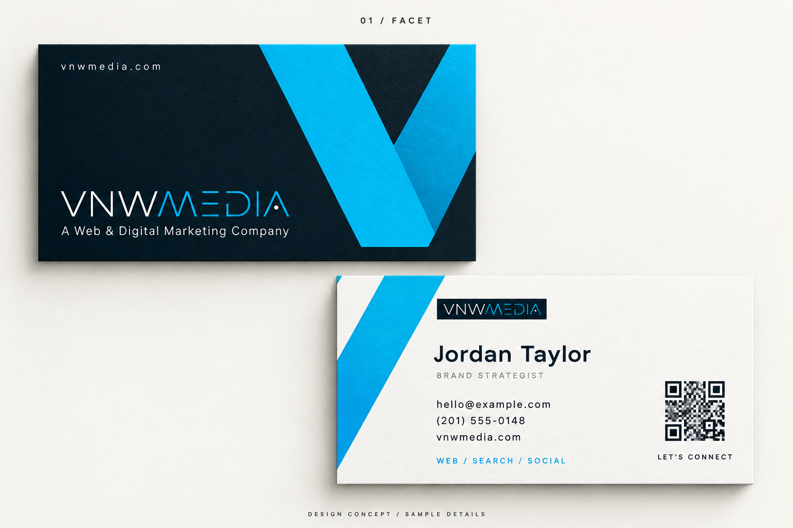
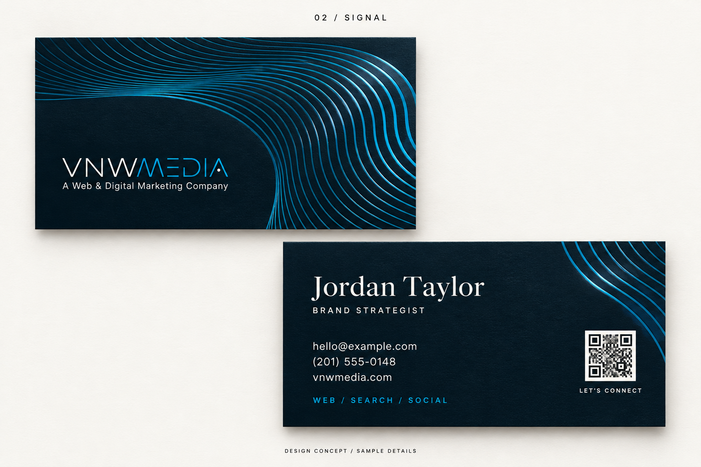
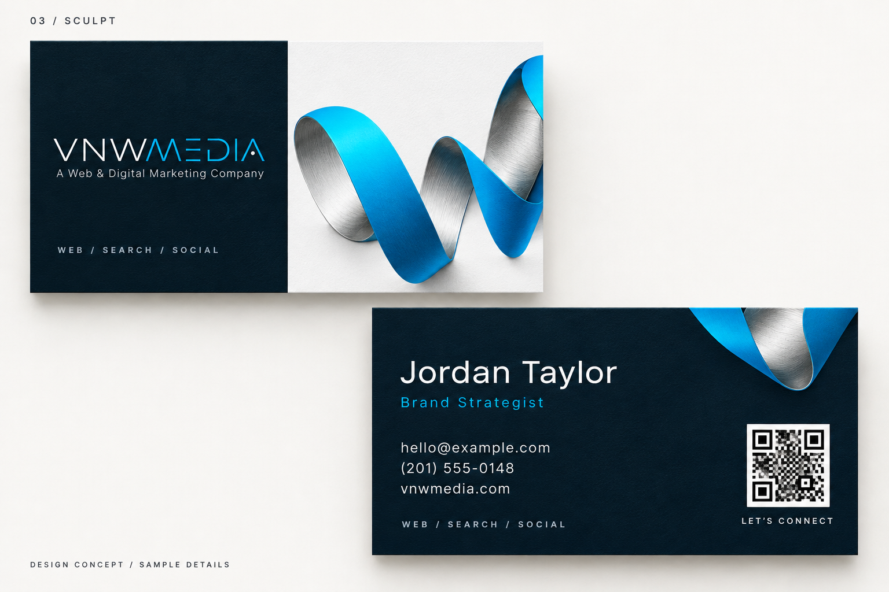
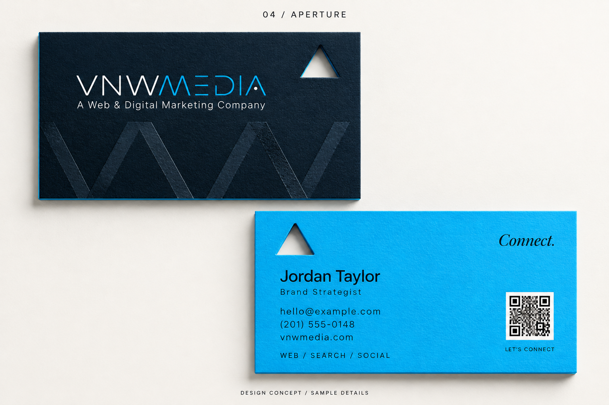
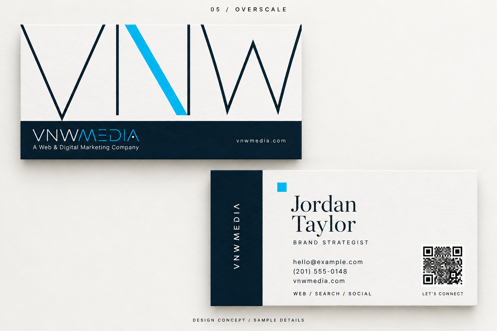

01 Facet
02 Signal
03 Sculpt
04 Aperture
05 Overscale01 / Graphic / angular
Facet
An oversized cyan form drawn from the angles of your logo. A contrasting white reverse keeps the contact details sharp.
02 / Flowing / tactile
Signal
Cyan linework wraps around the identity and continues onto the reverse. A quieter contact layout balances the movement.
03 / Dimensional / expressive
Sculpt
A sculptural cyan-and-silver ribbon gives the card a custom visual centerpiece, with a restrained navy contact side.
04 / Structural / unexpected
Aperture
A triangular aperture echoes the letterforms in your logo. Navy on the front, cyan on the reverse, with a colored paper core.
05 / Typographic / architectural
Overscale
Your letterforms become the graphic: oversized, cropped and accented in cyan. An asymmetric reverse pairs editorial type with clear contact information.